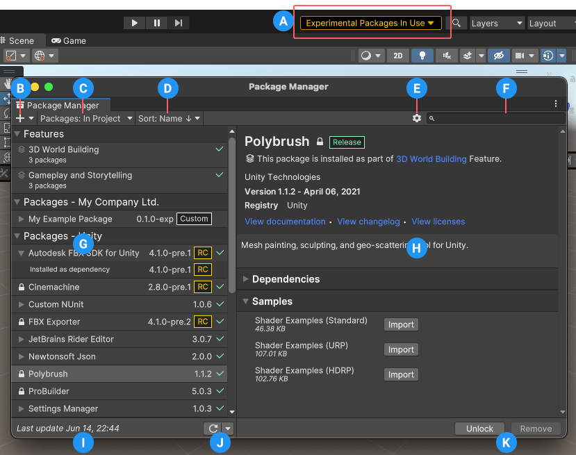
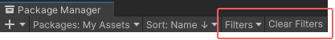
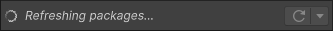
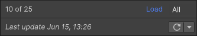
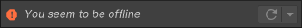
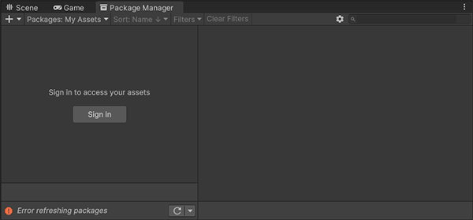

Use the Unity Package Manager (in Unity’s top menu: Window > Package Manager) to view which packages and feature sets are available for installation or already installed in your project. In addition, you can use this window to see which versions are available, and install, remove, disable, or update packages and feature sets for each project.

The Package Manager window
The Package Manager window displays:
(A) The experimental package indicator, which warns you if your project contains experimental packages.
(B) The add button, which you can click to install a package directly into your project by entering a git URL, a local path, or a package name.
(C) The Packages drop-down menu, which you can use to change what appears in the list (context).
(D) The Sort drop-down menu, which lets you sort the list of packages and feature sets by name or date.
For Asset StoreA growing library of free and commercial assets created by Unity and members of the community. Offers a wide variety of assets, from textures, models and animations to whole project examples, tutorials and Editor extensions. More info See in Glossary packages, two additional controls give you some additional filtering options:

The Filters drop-down menu and the Clear Filters button allow you to narrow down which Asset Store packages appear in the list
(E)Advanced settings , which you can use to access the project settingsA broad collection of settings which allow you to configure how Physics, Audio, Networking, Graphics, Input and many other areas of your project behave. More info See in Glossary for the Package Manager or reset your project’s packages and feature sets to default.
(F) The search box, which you can use to look for packages and feature sets by name.
(G) The list view, which displays all packages that match the filter and search parameters you specify.
(H) The detail view, which displays information specific to the feature set or packageA container that stores various types of features and assets for Unity, including Editor or Runtime tools and libraries, Asset collections, and project templates. Packages are self-contained units that the Unity Package Manager can share across Unity projects. Most of the time these are called packages, but occasionally they are called Unity Package Manager (UPM) packages. More info See in Glossary selected in the list. For example, if a feature set is selected, the information specific to the feature set appears, including which packages it contains.
(I) The status bar, which displays information when Package Manager loads packages and feature sets. This includes errors and warning messages, the number of Asset Store packages available, and a link to load more Asset Store packages.
(J) The reload drop-down menu, which lets you force Package Manager to reload or resolve the packages in your project.
(K) Buttons to perform any of the following actions at the project level:
Select this item to return to Package Manager default settings.
Warning: This removes all customization from your project manifest file. Only use this as a last resort when you can’t figure out what is wrong with your project manifest file.
Status bar
The Package Manager displays messages in the status bar at the bottom left of the Package Manager window.
There are typically four status messages that you might see:
The first time you open the Package Manager window in a new project, the Refreshing packages message appears briefly:

Loading packages message
This message also appears when you select Refresh list from the reload drop-down menu.
When you are using the My Assets context, the load bar appears above the date. It displays the number of Asset Store packages and a Load link:

On the left, the load bar displays the number of Asset Store packages loaded vs. the total number available. Click the Load link on the right to load more (in this case ‘All’).
Most of the time the status bar displays the date and time of when the Package Manager window last refreshed its information. However, if the Package Manager detects a problem, such as a missing network connection, the Package Manager displays an error in the status bar:

Network error message
If your network connection is working, but you are not signed into your Unity account, the Package Manager doesn’t display any Asset Store packages. When you try to use the My Assets context, the Package Manager displays an error in the status bar:

Logged out of Unity account
In the list view, click the Sign in button to sign into your Unity account through the Unity Hub.
For information on how to resolve these errors and more, see Error messages.
Package Manager’s My Assets load bar added in Unity 2020.3NewIn20203
 button, which you can click to install a package directly into your project by entering a git URL, a local path, or a package name.
button, which you can click to install a package directly into your project by entering a git URL, a local path, or a package name.